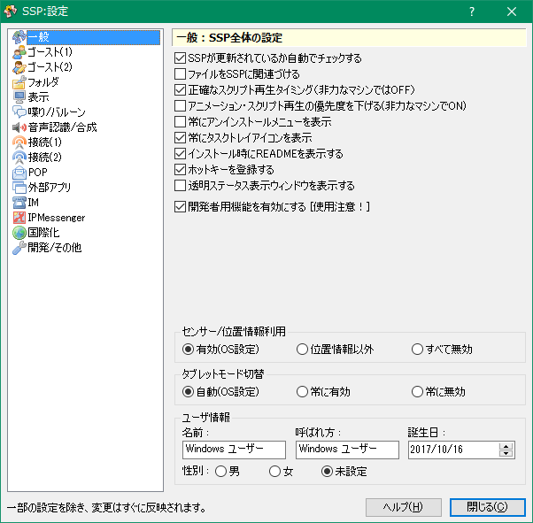

設定：一般
画像左側のリストをクリックすると、それぞれの解説ページへ移動します。

このページでは右クリックメニューの「設定」サブメニューにある項目「本体設定」で開くダイアログの、「一般」ページについて解説しています。
各項目の解説
- SSPが更新されているか自動でチェックする
- SSP更新チェック機能を自動で実行し、更新があった場合にのみ通知します。
- ファイルをSSPに関連付ける
- NAR（Nanika ARchive＝ゴーストやシェルなどのパッケージファイル）などのファイルをSSPに関連づけ、SSP起動中にそれをダブルクリックすることでインストールができるようになります。
通常、ONで特に問題はないとは思われますが、他の「何か」処理系と共存する場合、もしくは、レジストリを操作されたくない場合にOFFにしてください。標準状態ではOFFです。 - 正確なスクリプト再生タイミング
- スクリプト再生のタイミング調整の方法を変更します。
通常は常にONで問題ありませんが、非力なマシンや、他に重い作業をしている場合にスクリプト再生が非常に不自然になる事があります（いきなりウェイト0でスクリプトが飛ばされたりする）。
その場合にチェックを外すと、再生タイミングは正確ではありませんが、自然なスクリプト再生となります。 - アニメーション・スクリプト再生の優先度を下げる
- キャラクターが常時行っているアニメーションや、スクリプト再生の優先度を下げることにより、他のアプリケーションやSSPのゴースト起動以外の部分に処理時間を多めに割り振ることができます。
非力なマシンを利用中で、ゴーストを起動したまま何か作業も行いたい場合に便利です。 - 常にアンインストールメニューを表示
- 通常ゴースト側の指定に基づいてメニューがコントロールされますが、ONにしておくと、 ゴーストをアンインストールするボタンを常時表示させます。
- 常にタスクトレイアイコンを表示
- チェックしていない場合は、ゴーストが最小化された場合のみ、タスクトレイアイコンが表示されます。
リソースが逼迫しているなどの問題がない限り、常にONで利用する方がよいでしょう。 - インストール時にREADMEを表示する
- インストールが完了した際に、ゴーストの取り扱い説明書を表示します。
- ホットキーを登録する
- Ctrl-Shiftではじまる、常に有効なホットキーを登録するかどうか設定します。
他のソフトと衝突する場合は無効にしてください。 - 透明ステータス表示ウィンドウを表示する
- 起動時に、MATERIA（伺か）風のステータス表示ウィンドウを表示します。
元は2015年のエイプリールフールネタ機能です。 - 開発者用機能を有効にする
-
ゴースト開発者向けの、特定のロックを解除したり、エラー表示したりする機能を有効にします。
使い所を誤るとゴーストの機能に不具合が生じたり、内部の情報が見えてしまうことでの重大なネタバレの原因になったりします。
通常はOFFでお使い下さい。
ユーザ情報
名前・呼ばれ方・誕生日・性別を設定しておくと、もしかしたら対応しているゴーストでは何かいいことがあるかもしれません。
なお、この情報はゴーストへユーザ情報として通知したり、スクリプトを処理したりする以外に利用される事はありません。
下部のボタン
- ヘルプ
-
本体設定ダイアログの、設定中のページのヘルプ（つまりこのページ）を開きます。
ダイアログ右上の「？」マークも同様です。 - 閉じる
-
本体設定ダイアログを閉じます。
ダイアログ右上の「×」マークも同様です。